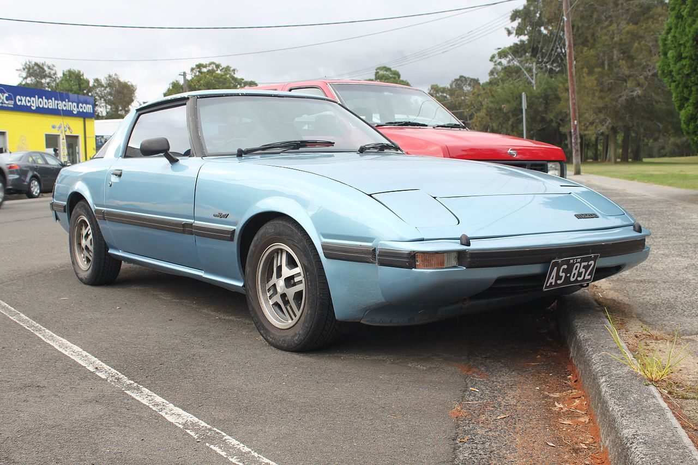
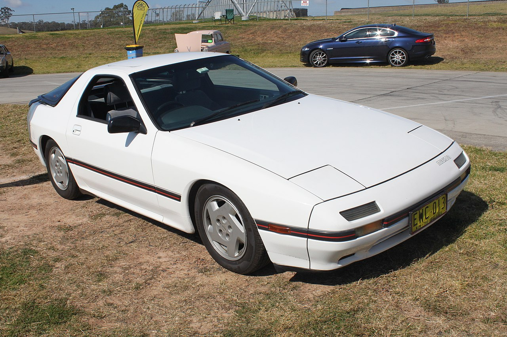
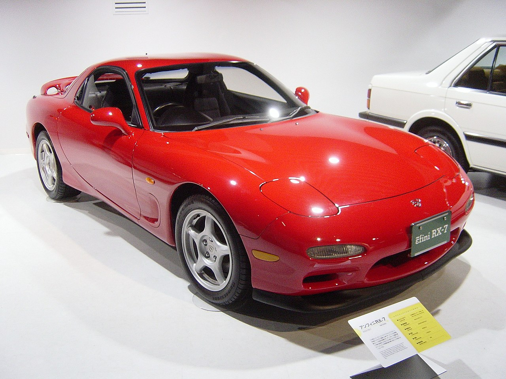

|  Первое поколение (SA/FB) появилось в 1978 году. Изначально оно оснащалось роторным двигателем 12A мощностью 105 л. с. В 1981 году был проведён рестайлинг, а мощность двигателя доведена до 115 л. с. В 1983 году появилась версия с турбонаддувом мощностью 165 л. с.
 Второе поколение (FC) вышло в 1985 году, мощность двигателя 13B с турбонаддувом составляла 185 л. с. В 1989 году мощность выросла до 205 л. с.
 | Третье поколение (FD) было представлено в 1992 году. Единственный доступный двигатель (13B-REW) был первым серийным твин-турбо агрегатом, экспортировавшимся из Японии. Первая версия двигателя развивала 265 л. с. (для версии с АКПП — 255 л. с.). В 1996 году был проведён фейслифтинг, а мощность двигателя была доведена до 280 л. с. В 1999 году провели значительный фейслифтинг, и экспорт автомобиля был прекращён.Из-за этого в каталогах часто можно встретить некорректную информацию о том, что именно в 1999 году в Японии началось производство этого автомобиля. Вообще же, третье поколение модифицировалось 5 раз: в 1993, 1995, 1996, 1998 и 1999 годах. Помимо этого RX-7 имела несколько ограниченных выпусков. Например, в 1992 году была выпущена партия в 300 машин серии RZ. А в 1994 году была представлена модификация R-II, ограниченная выпуском 350 автомобилей. Чуть позже, в 1997 году, было выпущено 700 машин серии Type RB Bathurst X, имевшей, помимо прочих доработок, эксклюзивный красный кожаный салон. В 1997 году к тридцатилетию модели была представлена модификация RS-R, тоже имевшая определённый лимит на выпуск. В 2002 году компания Mazda представила последнюю ограниченную серию модели RX-7 Spirit R.